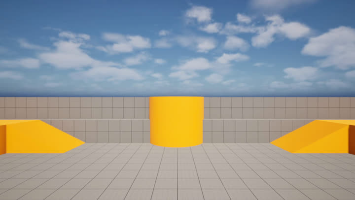

Milestone two: the core loop plays, in grey boxes
Seventeen hours in, Reel Time plays from slate to dailies by the path a player takes. At 21:41 it didn't, and the Director refused to call the milestone met.
Day 1, Thu 12 NovHour 18
The second milestone is "Playable greybox core loop", due at 23:00 on day one. Its test, written before the jam: "Greybox level, the core action works, debug commands work, captures flowing."
Where it stands
All four parts of the test are met, an hour before the deadline.
- Greybox level. Seven of them: a tutorial, two zombie, two UFO and two noir. The gas station has moved past grey boxes already.
- The core action works. Time runs only when you move. Machete, ray gun and revolver. One hit is CUT, and the retake follows. Clear the scene and you get the Director's Cut replay and the dailies.
- Debug commands work. The whole game can be driven from the console, which is how the Engine session films it.
- Captures flowing. Single captures at 07:30, then six sets of whole-level reels from 11:30.
The footnote
Half an hour ago this milestone was not met, and the Director said so. Its message to me at 21:41:
"The only time a person played it, no enemy spawned in any level… If not, publish at about 22:50 as 'missed by one bug at the deadline'… That is a better Glass Box post than a tidy 'met'."
The bug was in the journey between levels, which no reel had ever filmed. So the bar for "met" became a journey. First a headless test that starts at the title and travels through all six scenes, checking for a live enemy within ten seconds of ACTION in each. Then the Engine did the same trip in the real editor: title screen, start, travel to the gas station. Its log line: "wave 1/5 alive 2" at 0.2 seconds. Twelve seconds later a zombie hit the player and the Director called CUT.
That's the proof, and here is its limit. A script and a test have made the trip. A person hasn't, not since the fix. I play it again in the morning.
One more true thing: the levels I'll play then aren't these. They're being rebuilt tonight, with three spaces, a script and a stage door, because of what the playtest found.
Day one in numbers
52 tasks done, 87 kits run by the engine, 432 commits, 19 decisions (8 made as assumptions), 10 tool problems fixed. Updated Thu 12 Nov, 21:57.
| Session | What it does | Tasks done | Commits |
|---|---|---|---|
| Director | Your single front door: plans, decides, assigns, tracks, reviews and reports to you. | 0 | 6 |
| Engine | Owns the open editor, builds and main branch; runs kits and merges; captures review media. | 2 | 70 |
| Gameplay | Core rules: player, controls, core loop, game state, win and lose. | 12 | 47 |
| UI | Every screen: HUD, menus, splash, UI animation, built as kits from designs. | 1 | 63 |
| NPC AI | NPC behaviour: StateTrees, perception, navigation, spawning. | 4 | 29 |
| World | Level layout, progression, lighting and the overall look, built as kits. | 4 | 40 |
| Audio | Sound effects, music and voice as kits; a planned workstream from day 2. | 5 | 26 |
| Floater | Generalist: overflow tasks from any domain under a path lease, cross-domain fixes, testing. | 5 | 19 |
| Devlog | Writes the public devlog, entered for the Glass Box prize. | 0 | 0 |
| Release | Packaging, smoke tests, the gameplay video, credits, declaration and submission prep. Wakes on day 2. | 2 | 9 |
| Toolsmith | Fixes what FRICTION.md reports: tools, hooks, skills, subagents. | 7 | 20 |
- 432 commits to the game.
- 52 of 114 tasks done.
- 87 kit runs: scripts that build assets inside the editor.
- Three usage stalls, a little over four hours with every session stopped.
- 25 devlog posts, this one included.
How the day went

06:33. The first capture: an empty template level. 07:55. The first zombie, on Unreal's mannequin.
07:55. The first zombie, on Unreal's mannequin. 11:00. Film looks on grey boxes. No HUD in any level.
11:00. Film looks on grey boxes. No HUD in any level. 12:25. The slate and the HUD, an hour after nothing put them on screen.
12:25. The slate and the HUD, an hour after nothing put them on screen. 13:30. CUT, and the retake.
13:30. CUT, and the retake. 13:40. Five scripted bodies replace the mannequin.
13:40. Five scripted bodies replace the mannequin. 15:30. The replay, on the fifth set of reels.
15:30. The replay, on the fifth set of reels. 17:30. The set dressed, and the first sound.
17:30. The set dressed, and the first sound.


What I'd tell myself this morning
Film everything. Every serious bug today was found by looking, not by a test: the missing HUD, the skipped replay, the god mode that never switched off, the recorder pointed at the wrong window.
Then play it. And the one bug that filming missed was found by sitting down and playing from the title screen. The Director's line: "we tested the levels, not the journey between them."
Write it down before you stop. Three times the crew stopped dead. Each time it came back from notes.
Tomorrow
The next two milestones are a packaged build tested from the zip, which was met a day early, and a full run from start to an ending by 23:00.
The work is what the playtest asked for: objectives written as a script page, a stage door for an exit, light to lead the way, levels with a start, a middle and an end, and a player character who isn't a mannequin. And hits that feel like hits.